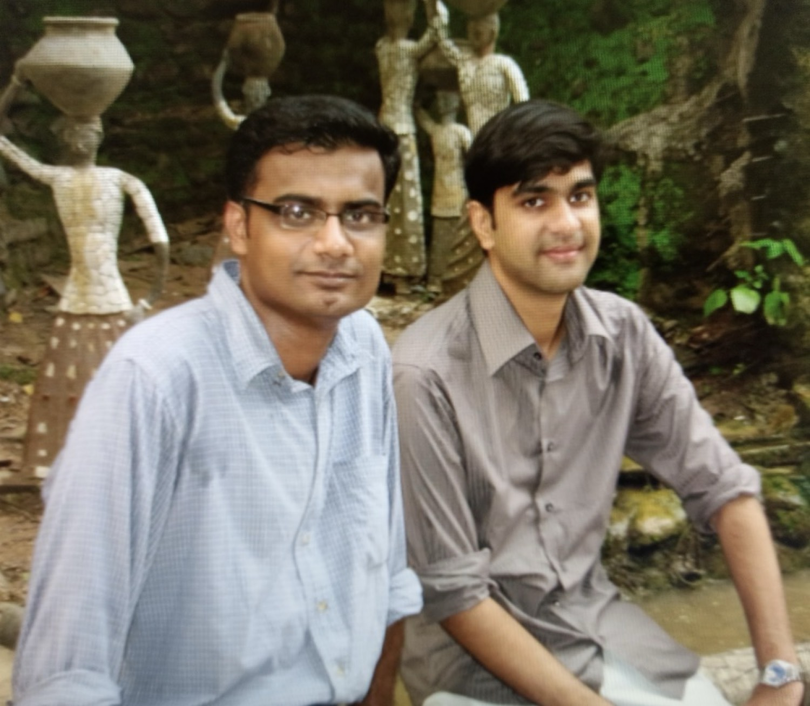

About us
Two school friends who still like arguing about the long game — cities, cultures, technology, and the next few centuries.

Where the word came from
Sometime in the early 1990s, a classmate at St. Columba’s in New Delhi earnestly tried to say “thinking” and came out with “thoughting” instead. It stuck. For years it was just an inside joke — the kind of nonsense that only makes sense if you were there. Three decades later, when we finally decided to put some of our longer thoughts into the world, the old joke felt oddly perfect. Thoughting. Thoughters. A slightly broken, slightly cheeky name for a place where two people still try to think in public without taking themselves too seriously.
Justin Jose
Justin is a strategic thinker who has spent most of his adult life moving between cities and cultures — Delhi, Mumbai, Kochi, Amsterdam, Dubai, London, New York and more. The constant motion became a kind of education: watching how different places handle growth, stress, bureaucracy and hope. He writes from the vantage point of someone who has seen the same problems wear different clothes in different time zones, and who still believes careful observation beats loud opinion. Father of two, chronic notetaker, and the one who first insisted that “three centuries” was a useful unit of time to think in.
Rishabh Gupta
Rishabh is a systems thinker with a sharp eye for how institutions, markets and technology actually behave over time. Educated at MIT and ISB, he has spent years working across strategy, technology and complex organisations, always drawn to the deeper patterns rather than the surface noise. Equally well-travelled, he brings the same restless curiosity about cultures, cities and long-term change. At Thoughters he writes and argues with the same seriousness he brings to the rest of his work — clear, rigorous, and allergic to empty jargon.
This is not a business site. It is simply two people who like thinking in public — about civilizations, cities, and the longer arc of change — and who decided the old school joke was good enough to name the experiment after.